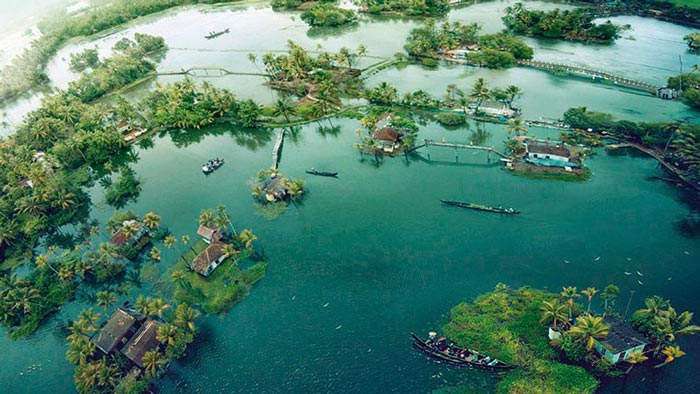
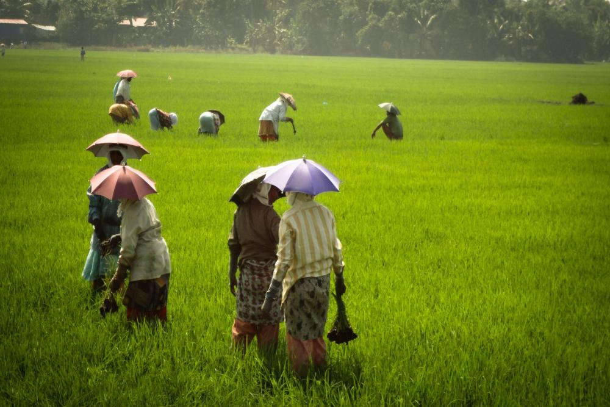
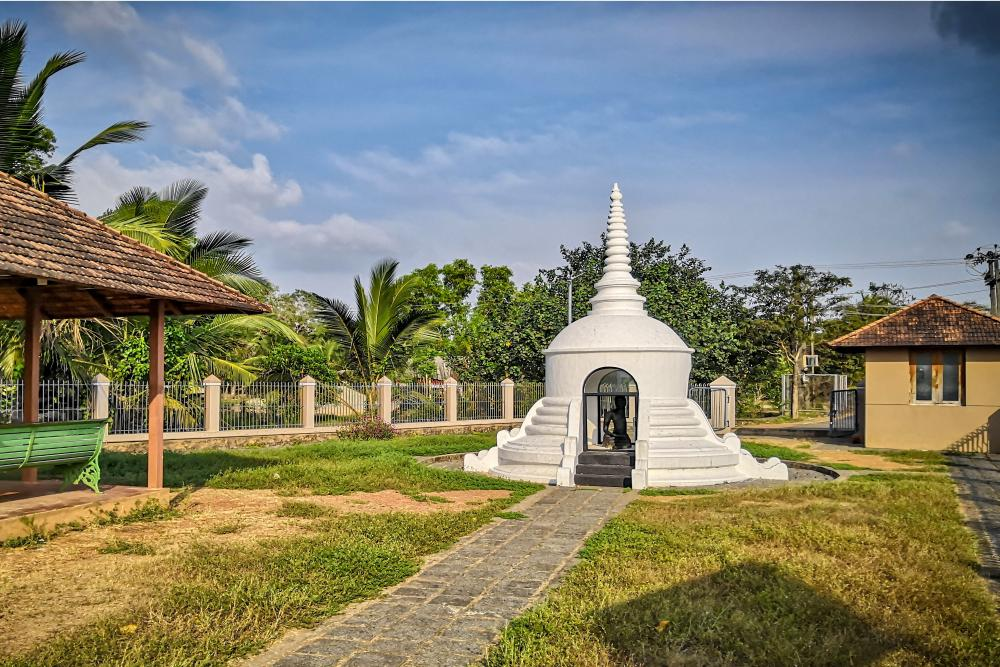
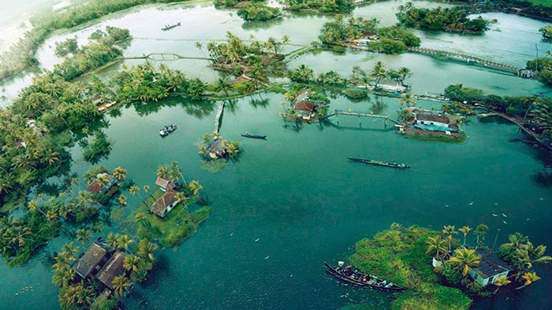
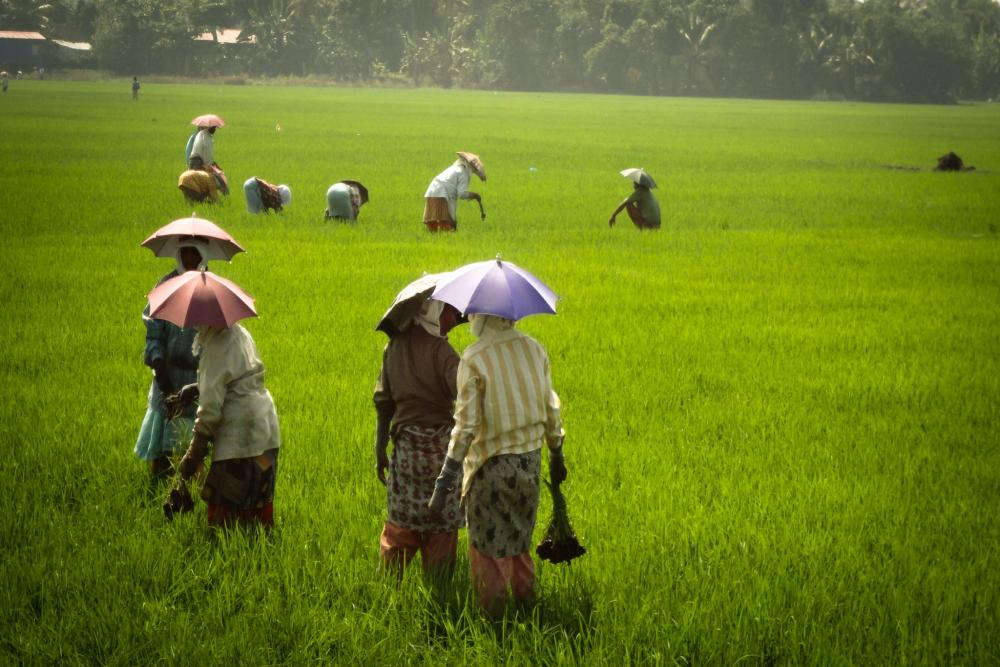
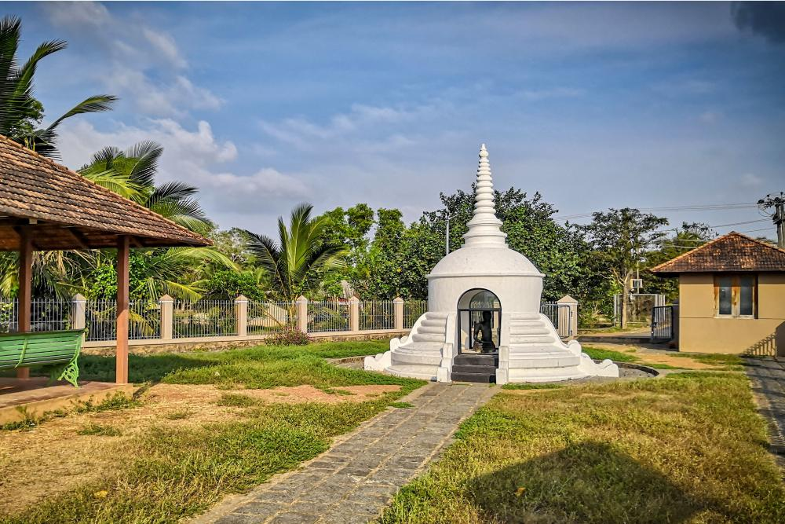
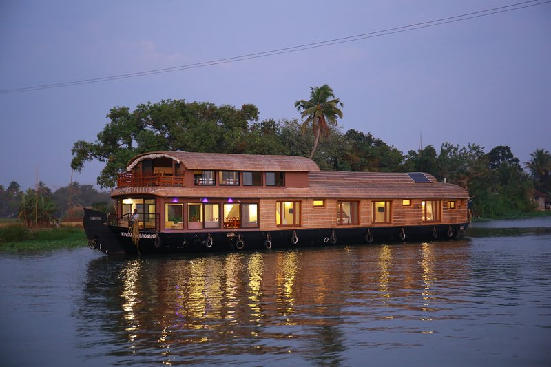
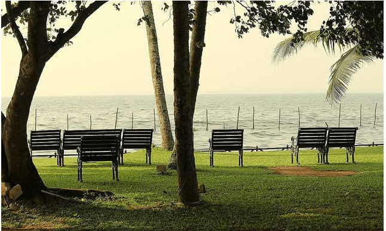

ALAPPUZHA
Located in the heart of the slithering backwaters of Kerala, Alleppey or Alappuzha is often termed the “Venice of the East”. The town is among the oldest planned towns in India and is famous for its several backwater canals, beaches, paddy fields and lagoons. Alleppey is iconic for its houseboats cruises in the backwaters and attracts thousands of visitors each year. With the Laccadive Sea on its west Alleppey is blessed with an abundance of natural flora and fauna and the backwaters and the wetlands make it rich in marine life and resident and migratory avi fauna. Alleppey is also a cultural hub in Kerala since the early Sangam Era (3rd Century BC – 4th Century AD) and was a stronghold of the Chera Kingdom and had trade relations with the Greek and Romans. Alleppey was also one of the spots where St. Thomas the Apostle built the Churches. Here’s the list of the best places to visit in Alleppey.
 





1. ALAPPY BEACH
The iconic Alleppey beach is the perfect place to relax on a quiet and subtle evening. The waters of the Arabian Sea look majestic from the white sandy shores. If lucky, one can also view the dolphins from the beach. Nevertheless, the waters are not safe for swimming due to the strong currents especially during the monsoons.
2. HOUSEBOAT

It is an important tourist destination in India.The Backwaters of Alappuzha is one of the most popular tourist attractions in Kerala which attracts millions of domestic and international tourists to the district and employs vast number of locals in the private sector.
3. KARUMADIKUTTAN
Karumadikkuttan refers to the local name for the 9th century black granite statue of Buddha found abandoned at a nearby stream called Karumady thodu. The Statue is unfortunately missing its entire left half but has now been conserved by the Kerala State Government.
4. VEMBANAD LAKE

The longest Lake in India and the largest lake in Kerala, the Vembanad Lake is known by the name Punnamada Lake in Alleppey. The lake covers an area of 2033.02 sq km, making the largest wetland system in India. The lake enjoys rich biodiversity and is home to several marine, bird and animal species. The lake is also home to the annual snake boat racing which must be witnessed.